Cozinha contemporânea
Pratos assinados pela casa, com entradas para dividir e principais que sustentam a noite inteira. Do risoto de trufa ao filé mignon ao molho de ervas.
Quarta a domingo · a partir das 17h
Restaurante · São Paulo
Gastronomia contemporânea e coquetelaria autoral,
sob o verde que toma conta da casa
Quarta a domingo · a partir das 17h
São Paulo · SP
O Verdant
No Verdant House, cada detalhe é pensado para proporcionar uma experiência única. Da vegetação que toma conta da arquitetura à cozinha contemporânea, valorizamos sabores, conexões e momentos que ficam na memória.
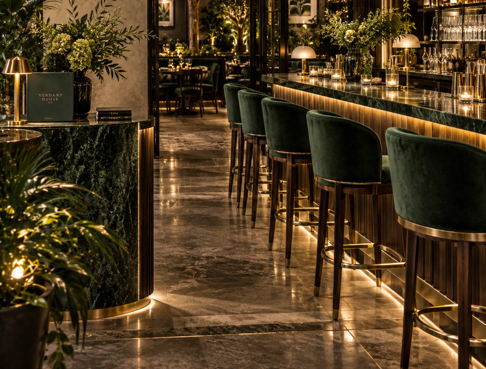
A experiência
Pratos assinados pela casa, com entradas para dividir e principais que sustentam a noite inteira. Do risoto de trufa ao filé mignon ao molho de ervas.
Um balcão iluminado, drinks assinados pela casa e taças que atravessam o happy hour até o fim da noite.
Uma casa verde: folhagem suspensa, luz quente e uma vegetação que toma conta da arquitetura e abafa a cidade lá fora.
Gastronomia
Alguns dos pratos que saem da nossa cozinha.
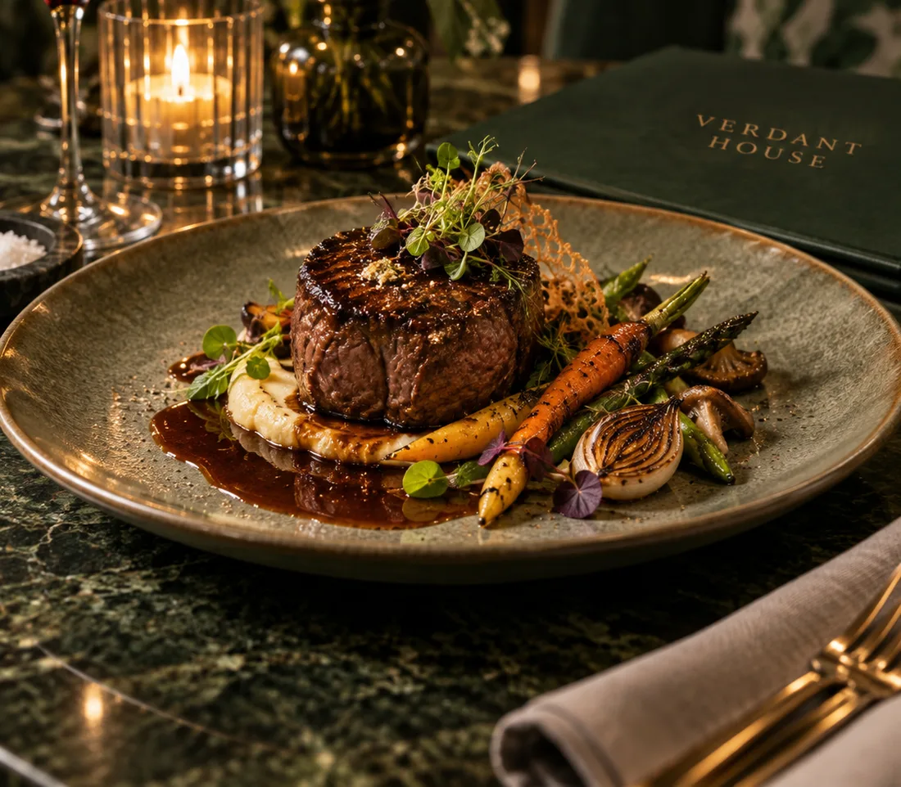
Prato principal
Grelhado no ponto, servido com purê trufado e legumes assados no azeite da casa.
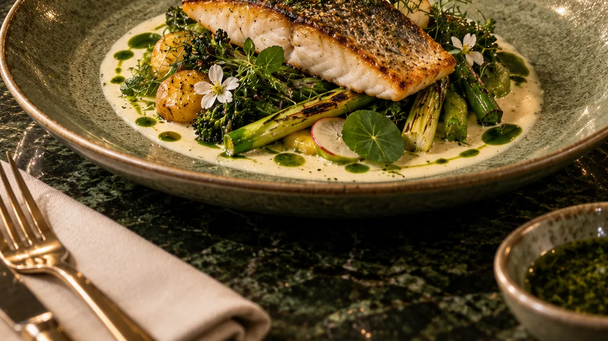
Prato principal
Pele crocante, aspargos, batatas confitadas e beurre blanc de ervas do nosso jardim vertical.
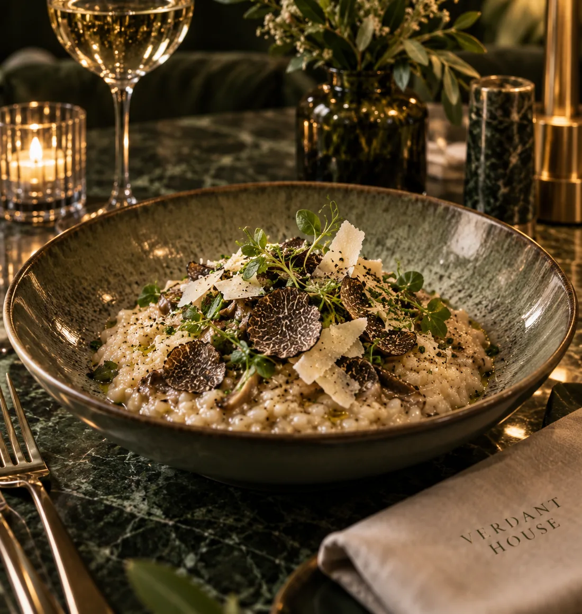
Prato principal
Arbório al dente, parmesão e lâminas de trufa negra fresca.
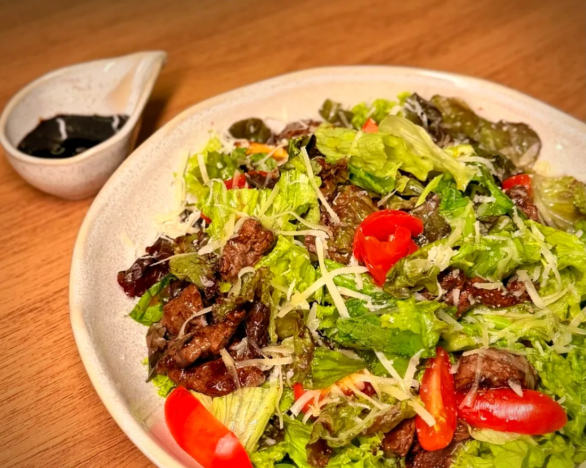
Harmonização
Taças frescas para equilibrar os pratos à base de peixe e vegetais.
À mesa
A cozinha também serve para o centro da mesa — sabores que acompanham conversas longas.
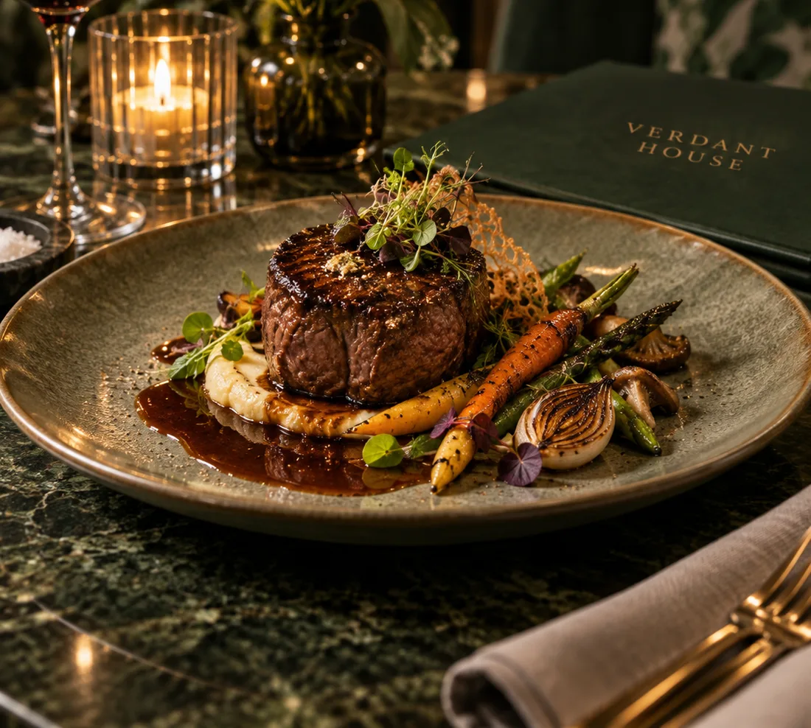
Harmonização
Tintos encorpados, selecionados para acompanhar os cortes e assados da casa.
Drinks
Do primeiro brinde do happy hour à última taça antes de a casa fechar.
Atmosfera
Um recorte do que se vê por aqui.
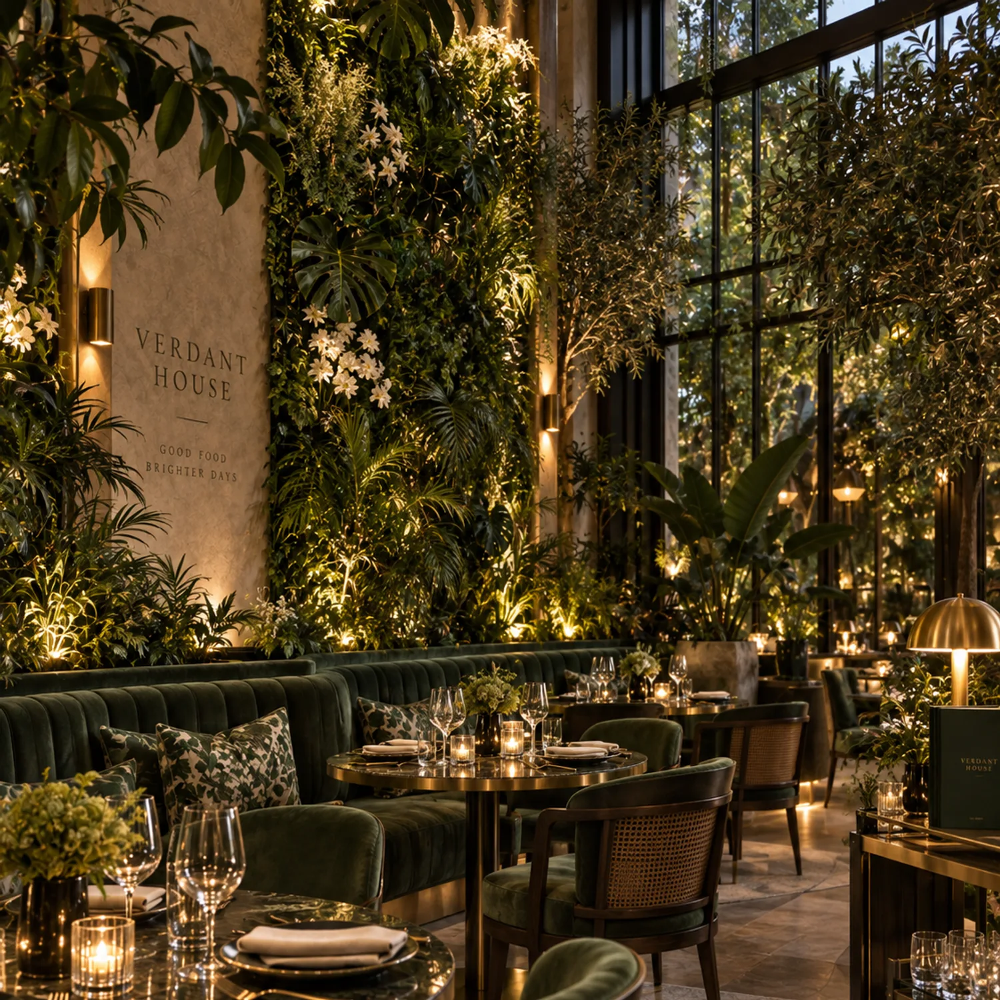
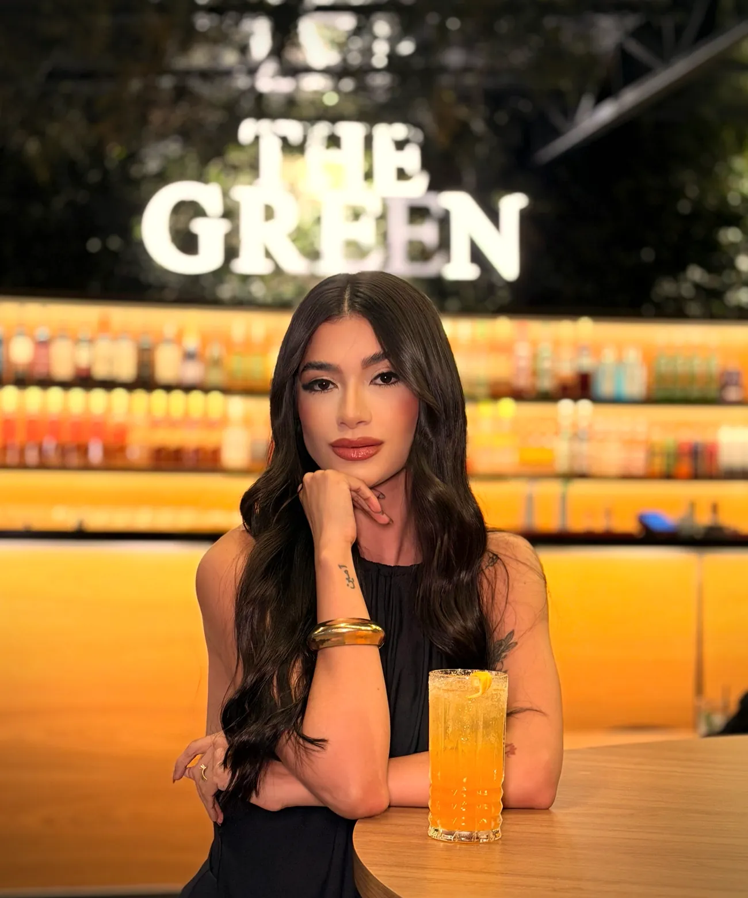
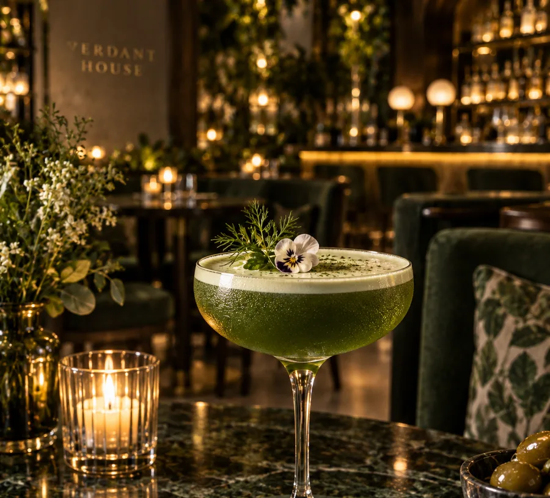
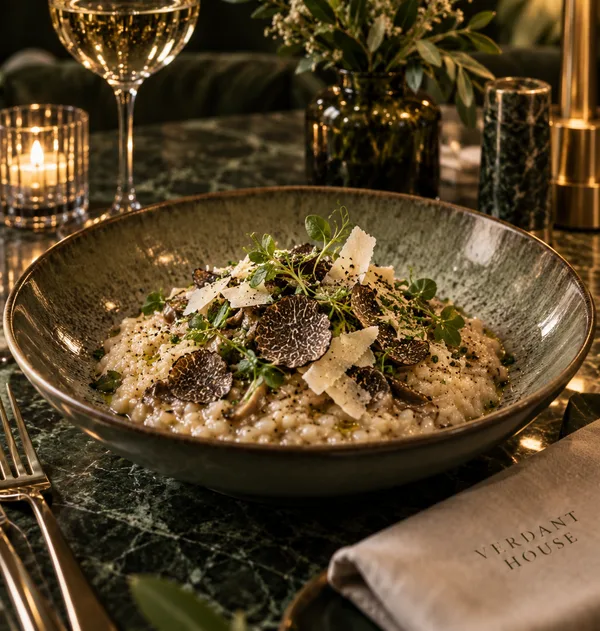
Visite
Horário de funcionamento
Quarta a domingo
a partir das 17h
Segunda e terça · fechado
Novidades, eventos e o que está saindo da cozinha — tudo primeiro por lá.
@vldsdigital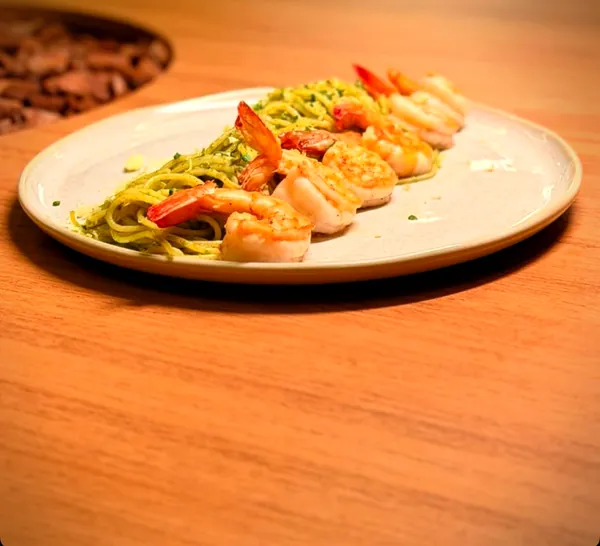
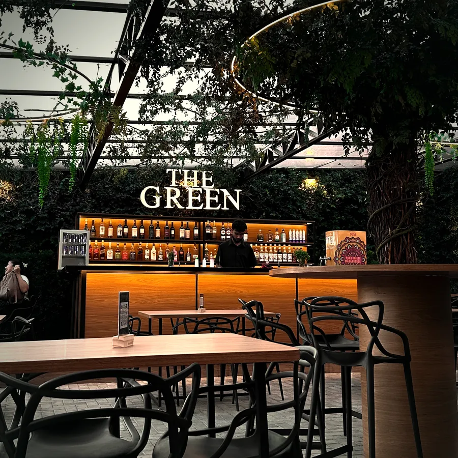
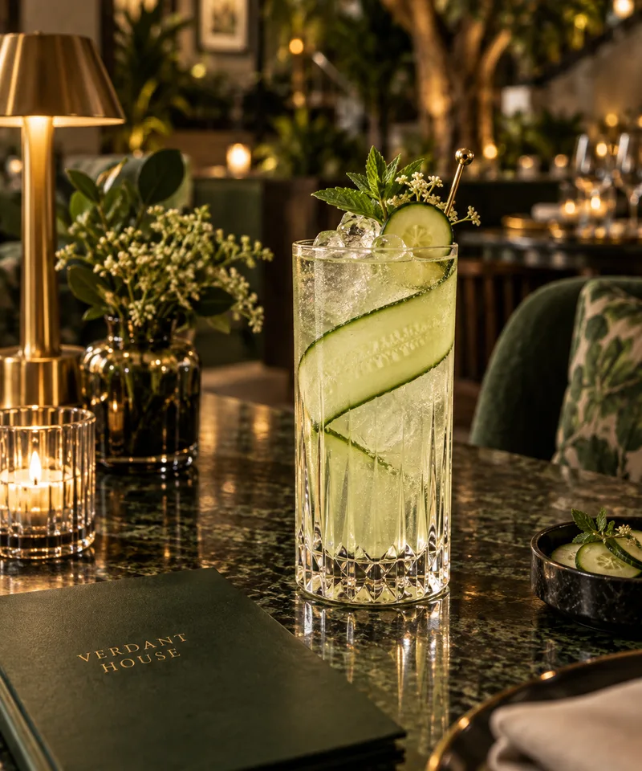